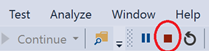

4. Többszálú alkalmazások készítése¶
A gyakorlat célja¶
A gyakorlat célja, hogy megismertesse a hallgatókat a többszálas programozás során követendő alapelvekkel. Érintett témakörök (többek között):
- Szálak indítása (
Thread) - Szálak leállítása
- Szálbiztos (thread safe) osztályok készítése a
lockkulcsszó alkalmazásával ThreadPoolhasználata- Jelzés és jelzésre várakozás szál szinkronizáció
ManualResetEventsegítségével (WaitHandle) - Windows Forms szálkezelési sajátosságok (
Invoke)
Természetesen, mivel a témakör hatalmas, csak alapszintű tudást fogunk szerezni, de e tudás birtokában már képesek leszünk önállóan is elindulni a bonyolultabb feladatok megvalósításában.
A kapcsolódó előadások: Konkurens (többszálú) alkalmazások fejlesztése.
Előfeltételek¶
A gyakorlat elvégzéséhez szükséges eszközök:
- Visual Studio 2022
- Windows 10 vagy Windows 11 operációs rendszer (Linux és macOS nem alkalmas)
Bevezető¶
A párhuzamosan futó szálak kezelése kiemelt fontosságú terület, melyet miden szoftverfejlesztőnek legalább alapszinten ismernie kell. A gyakorlat során alapszintű, de kiemelt fontosságú problémákat oldunk meg, ezért törekednünk kell arra, hogy ne csak a végeredményt, hanem az elvégzett módosítások értelmét és indokait is megértsük.
A feladat során egyszerű Windows Forms alkalmazást fogunk felruházni többszálas képességekkel, egyre komplexebb feladatokat megoldva. Az alapprobléma a következő: van egy függvényünk, mely hosszú ideig fut, s mint látni fogjuk, ennek „direktben” történő hívása a felületről kellemetlen következményekkel jár. A megoldás során egy meglévő alkalmazást fogunk kiegészíteni saját kódrészletekkel. Az újonnan beszúrandó sorokat az útmutatóban kiemelt háttér jelzi.
0. Feladat - Ismerkedés a kiinduló alkalmazással, előkészítés¶
Klónozzuk le a 4. gyakorlathoz tartozó kiinduló alkalmazást repositoryját.
- Nyissunk egy command prompt-ot
- Navigáljunk el egy tetszőleges mappába, például c:\work\NEPTUN
- Adjuk ki a következő parancsot:
git clone https://github.com/bmeviauab00/lab-tobbszalu-kiindulo.git - Nyissuk meg SuperCalculator.sln solutiont Visual Studio-ban.
A feladatunk az, hogy egy bináris formában megkapott algoritmus futtatásához Windows Forms technológiával felhasználói felületet készítsünk. A bináris forma .NET esetében egy .dll kiterjesztésű fájlt jelent, ami programozói szemmel egy osztálykönyvtár. A fájl neve esetünkben Algorithms.dll, megtalálható a leklónozott Git repositoryban.
A kiinduló alkalmazásban a felhasználói felület elő is van készítve. Futtassuk az alkalmazást:

Az alkalmazás felületén meg tudjuk adni az algoritmus bemenő paramétereit (double számok tömbje): a példánkban mindig két double szám paraméterrel hívjuk az algoritmust, ezt a két felső szövegmezőben lehet megadni.
A feladatunk az, hogy a Calculate Result gombra kattintás során futtassuk az algoritmust a megadott paraméterekkel, majd, ha végzett, akkor a Result alatti listázó mező új sorában jelenítsük meg a kapott eredményt a bemenő paraméterekkel együtt.
Következő lépésben ismerkedjünk meg a letöltött Visual Studio solutionnel:
- Nézzük végig a
MainFormosztályt. - Az látjuk, hogy a felület alapvetően kész, csak az algoritmus futtatása hiányzik.
- Az eredmény és a paraméterei naplózásához is találunk egy
ShowResultnevű segédfüggvényt. - A
DataFifoosztályt egyelőre hagyjuk ki, csak a gyakorlat második felében fogjuk használni, majd később megismerkedünk vele.
A DLL-ben levő kód felhasználása¶
A kiinduló projektben megtaláljuk a Algorithm.dll-t. Ebben lefordított formában egy Algorithms névtérben levő SuperAlgorithm nevű osztály található, melynek egy Calculate nevű statikus művelete van. Ahhoz, hogy egy projektben fel tudjuk használni a DLL-ben levő osztályokat, a DLL-re a projektünkben egy ún. referenciát kell felvegyünk.
-
Solution Explorerben a projektünk Dependencies node-jára jobbklikkelve válasszuk az Add Project reference opciót!

Külső referenciák
Itt valójában nem egy másik Visual Studio projektre adunk referenciát, de így a legegyszerűbb előhozni ezt az ablakot.
Megemlítendő még, hogy külső osztálykönyvtárak esetében már nem DLL-eket szoktunk referálni egy rendes projektben, hanem a .NET csomagkezelő rendeszeréből a NuGet-ről szokás a külső csomagokat beszerezni. Most az Algorithm.dll esetünkben nincs NuGet-en publikálva, ezért kell kézzel felvegyük azt.
-
Az előugró ablak jobb alsó sarokban található Browse gomb segítségével keressük meg és válasszuk ki projekt External almappájában található Algorithms.dll fájlt, majd hagyjuk jóvá a hozzáadást az OK gombbal!
A Solution Explorerben egy projekt alatti Dependencies csomópontot lenyitva láthatjuk a hivatkozott külső függőségeket. Itt most már megjelenik az Assemblyk között előbb felvett Algorithms referencia is. A Frameworks kategóriában a .NET keretrendszer csomagjait találjuk. Az Analyzerek pedig statikus kódelemző eszközök fordítás időben. Illetve itt lennének még a projekt vagy a NuGet referenciák is.

Kattintsunk Algorithms referencián jobb gombbal és válasszuk a View in Object Browser funkciót. Ekkor megnyílik az Object Browser tabfül, ahol megtekinthetjük, hogy az adott DLL-ben milyen névterek, osztályok találhatók, illetve ezeknek milyen tagjaik (tagváltozó, tagfüggvény, property, event) vannak. Ezeket a Visual Studio a DLL metaadataiból az ún. reflection mechanizmus segítségével olvassa ki (ilyen kódot akár mi is írhatunk).
Az alábbi ábrának megfelelően az Object Browserben baloldalt keressük ki az Algorithms csomópontot, nyissuk le, és láthatóvá válik, hogy egy Algorithms névtér van benne, abban pedig egy SuperAlgorithm osztály. Ezt kiválasztva középen megjelennek az osztály függvényei, itt egy függvényt kiválasztva pedig az adott függvény pontos szignatúrája:

1. Feladat – Művelet futtatása a főszálon¶
Most már rátérhetünk az algoritmus futtatására. Első lépésben ezt az alkalmazásunk fő szálán tesszük meg.
-
A főablakon lévő gomb
Clickeseménykezelőjében hívjuk meg a számoló függvényünket. Ehhez kattintsunk a Solution Explorerben duplán aMainForm.csfájlra, majd a megjelenő Form Designer-ben a Calculate Result gombra. Egészítsük ki a kódot az újonnan behivatkozott algoritmus meghívásával.private void buttonCalcResult_Click(object sender, EventArgs e) { if (double.TryParse(textBoxParam1.Text, out var p1) && double.TryParse(textBoxParam2.Text, out var p2)) { var parameters = new double[] { p1, p2 }; var result = Algorithms.SuperAlgorithm.Calculate(parameters); ShowResult(parameters, result); } else { MessageBox.Show(this, "Invalid parameter!", "Error"); } } -
Próbáljuk ki az alkalmazást, és vegyük észre, hogy az ablak a számolás ideje alatt nem reagál a mozgatásra, átméretezésre, a felület gyakorlatilag befagy.
Az alkalmazásunk eseményvezérelt, mint minden Windows alkalmazás. Az operációs rendszer a különböző interakciókról (pl. mozgatás, átméretezés) üzenetekben értesíti az alkalmazásunkat. Mivel a gombnyomást követően az alkalmazásunk egyetlen szála a kalkulációval van elfoglalva, nem tudja azonnal feldolgozni a további felhasználói utasításokat. Amint a számítás lefutott (és az eredmények megjelennek a listában) a korábban kapott parancsok is végrehajtásra kerülnek.
2. Feladat – Végezzük a számítást külön szálban¶
Következő lépésben a számítás elvégzésére egy külön szálat fogunk indítani, hogy az ne blokkolja a felhasználói felületet.
-
Készítsünk egy új függvényt a
MainFormosztályban, mely a feldolgozó szál belépési pontja lesz.private void CalculatorThread(object arg) { var parameters = (double[])arg; var result = Algorithms.SuperAlgorithm.Calculate(parameters); ShowResult(parameters, result); } -
Indítsuk el a szálat a gomb
Clickeseménykezelőjében. Ehhez cseréljük le a korábban hozzáadott kódot:private void buttonCalcResult_Click(object sender, EventArgs e) { if (double.TryParse(textBoxParam1.Text, out var p1) && double.TryParse(textBoxParam2.Text, out var p2)) { var parameters = new double[] { p1, p2 }; var th = new Thread(CalculatorThread); th.Start(parameters); } else { MessageBox.Show(this, "Invalid parameter!", "Error"); } }A Thread objektum
Startműveletében átadott paramétert kapja meg aCalculatorThreadszálfüggvényünk. -
Futtassuk az alkalmazást F5-tel (most fontos, hogy így, a debuggerben futtassuk)! InvalidOperationException, Cross-thread operation not valid hibaüzenetet kapunk a
ShowResultmetódusban, ugyanis nem abból a szálból próbálunk hozzáférni a UI elemhez / vezérlőhöz, amelyik létrehozta (a vezérlőt). A következő feladatban ezt a problémát analizáljuk és oldjuk meg.
3. Feladat – az Invoke és InvokeRequired használata¶
Az előző pontban a problémát a következő okozza. Windows Forms alkalmazásoknál él az alábbi szabály: az űrlapok/vezérlőelemek alapvetően nem szálvédett objektumok, így egy űrlaphoz/vezérlőhöz csak abból a szálból szabad hozzáférni (pl. propertyjét olvasni, állítani, műveletét meghívni), amelyik szál az adott űrlapot/vezérlőt létrehozta, máskülönben kivételt kapunk.
Alkalmazásunkban azért kaptunk kivételt, mert a listViewResult vezérlőt a fő szálban hoztuk létre, a ShowResult metódusban az eredmény megjelenítésekor viszont egy másik szálból férünk hozzá (listViewResult.Items.Add).
A fenti szabály alól van pár kivétel: ilyen pl. a Control osztályban definiált InvokeRequired property és Invoke metódus, melyek bármely szálból biztonságosan elérhetők. Ezek pont abban nyújtanak segítséget, hogy a vezérlőkhöz mindig a megfelelő szálból férjünk hozzá:
- Ha az
InvokeRequiredtulajdonság értéke igaz, akkor a szál (mely azInvokeRequired-et hívja) a hívás helyén nem egyezik a vezérlőt létrehozó szállal, és ilyenkor csak azInvokeművelet segítségével "kerülő úton" férhetünk vezérlőnkhöz. Vagyis egy vezérlőhöz való hozzáférés során ezzel tudjuk eldönteni, közvetlenül hozzáférhetünk-e egy adott helyen a szálunkból, vagy csak azInvokesegítségével. - Az
Invokemetódus a vezérlőelemet létrehozó szálon futtatja le a számára paraméterként megadott metódust (melyből már közvetlenül hozzáférhetünk a vezérlőhöz).
Az InvokeRequired és az Invoke felhasználásával el tudjuk kerülni korábbi kivételünket (a vezérlőhöz, esetünkben a listViewResult-hoz való hozzáférést a megfelelő szálra tudjuk "irányítani"). Ezt fogjuk a következőkben megtenni.
Csak debuggerben futtatva jön az InvalidOperationException?
Ha kipróbálnánk, hogy debugger nélkül indítjuk el az alkalmazást (VS-ben Start without debugging vagy magát az exe-t), akkor azt tapasztalnánk, hogy nem jön a fenti kivétel. Ennek az az oka, hogy, fejlesztés időben, debuggerrel vizsgálva az alkalmazást, sokkal szigorúbban figyeli a keretrendszer a UI szál sértést, hogy már fejlesztés időben előjöjjenek olyan potenciális hibák, melyek amúgy még nem jelentenék az alkalmazás összeomlását.
A fenti esetben a ListView Invoke nélküli manipulálását jó eséllyel az esetek többségében még túlélné az app, de a keretrendszer a debuggeren keresztül futtatás során jelzi a hibás gyakorlatot.
Módosítanunk kell a ShowResult metódust annak érdekében, hogy mellékszálból történő hívás esetén se dobjon kivételt.
private void ShowResult(double[] parameters, double result)
{
if (InvokeRequired)
{
Invoke(ShowResult, new object[] { parameters, result });
}
else if (!IsDisposed)
{
var lvi = listViewResult.Items.Add($"{parameters[0]} # {parameters[1]} = {result}");
listViewResult.EnsureVisible(lvi.Index);
listViewResult.AutoResizeColumns(ColumnHeaderAutoResizeStyle.ColumnContent);
}
}
Próbáljuk ki!
Ez a megoldás már működőképes. A Form osztály InvokeRequired metódusa igazat ad vissza, amennyiben nem az őt létrehozó szálból hívjuk meg. Ilyen esetekben a Formot az Invoke metódusán keresztül tudjuk megkérni, hogy egy adott műveletet a saját szálán (amelyik a Formot létrehozta, ez a legtöbb alkalmazásban a fő szál) hajtson végre. A fenti példában tulajdonképpen a ShowResult függvény önmagát hívja meg még egyszer, csak második esetben már a Form saját szálán. Ez egy bevett minta a redundáns kódok elkerülésére.
Tegyünk töréspontot a ShowResult művelet első sorára, és az alkalmazást futtatva győződjünk meg, hogy a ShowResult művelet – különösen az Invoke tekintetében – a fentiekben ismertetetteknek megfelelően működik.
Vegyük ki a töréspontot, így futtassuk az alkalmazást: vegyük észre, hogy amíg egy számítás fut, újabbakat is indíthatunk, hiszen a felületünk végig reszponzív maradt.
4. feladat – Művelet végzése Threadpool szálon¶
Az előző megoldás egy jellemzője, hogy mindig új szálat hoz létre a művelethez. Esetünkben ennek nincs különösebb jelentősége, de ez a megközelítés egy olyan kiszolgáló alkalmazás esetében, amely nagyszámú kérést szolgál ki úgy, hogy minden kéréshez külön szálat indít, már problémás lehet. Két okból is:
- Ha a szálfüggvény gyorsan lefut (egy kliens kiszolgálása gyors), akkor a CPU nagy részét arra pazaroljuk, hogy szálakat indítsunk és állítsunk le, ezek ugyanis önmagukban is erőforrásigényesek.
- Túl nagy számú szál is létrejöhet, ennyit kell ütemeznie az operációs rendszernek, ami feleslegesen pazarolja az erőforrásokat.
- Egy másik probléma jelen megoldásunkkal: mivel a számítás ún. előtérszálon fut (az újonnan létrehozott szálak alapértelmezésben előtérszálak), hiába zárjuk be az alkalmazást, a program tovább fut a háttérben mindaddig, amíg végre nem hajtódik az utoljára indított számolás is: egy processz futása ugyanis csak akkor fejeződik csak be, ha már nincs futó előtérszála.
Módosítsuk a gomb eseménykezelőjét, hogy új szál indítása helyett threadpool szálon futtassa a számítást. Ehhez csak a gombnyomás eseménykezelőjét kell ismét átírni.
private void buttonCalcResult_Click(object sender, EventArgs e)
{
if (double.TryParse(textBoxParam1.Text, out var p1) && double.TryParse(textBoxParam2.Text, out var p2))
{
var parameters = new double[] { p1, p2 };
ThreadPool.QueueUserWorkItem(CalculatorThread, parameters);
}
else
{
MessageBox.Show(this, "Invalid parameter!", "Error");
}
}
Próbáljuk ki az alkalmazást, és vegyük észre, hogy az alkalmazás az ablak bezárásakor azonnal leáll, nem foglalkozik az esetlegesen még futó szálakkal (mert a threadpool szálak háttér szálak).
5. Feladat – Termelő-fogyasztó alapú megoldás¶
Az előző feladatok megoldása során önmagában egy jól működő komplett megoldását kaptuk az eredeti problémának, mely lehetővé teszi, hogy akár több munkaszál is párhuzamosan dolgozzon a háttérben a számításon, ha a gombot sokszor egymás után megnyomjuk. A következőkben úgy fogjuk módosítani az alkalmazásunkat, hogy a gombnyomásra ne mindig keletkezzen új szál, hanem a feladatok bekerüljenek egy feladatsorba, ahonnan több, a háttérben folyamatosan futó szál egymás után fogja kivenni őket és végrehajtani. Ez a feladat a klasszikus termelő-fogyasztó probléma, mely a gyakorlatban is sokszor előfordul, a működését az alábbi ábra szemlélteti.

Termelő fogyasztó vs ThreadPool
Ha belegondolunk, a ThreadPool is egy speciális, a .NET által számunkra biztosított termelő-fogyasztó és ütemező mechanizmus. A következőkben egy más jellegű termelő-fogyasztó megoldást dolgozunk ki annak érdekében, hogy bizonyos szálkezeléssel kapcsolatos konkurencia problémákkal találkozhassunk.
A főszálunk a termelő, a Calculate result gombra kattintva hoz létre egy új feladatot. Fogyasztó/feldolgozó/munkaszálból azért indítunk majd többet, mert így több CPU magot is ki tudunk használni, valamint a feladatok végrehajtását párhuzamosítani tudjuk.
A feladatok ideiglenes tárolására a kiinduló projektünkben már némiképpen előkészített DataFifo osztályt tudjuk használni. Nézzük meg a forráskódját. Egy egyszerű FIFO sort valósít meg, melyben double[] elemeket tárol. A Put metódus hozzáfűzi a belső lista végéhez az új párokat, míg a TryGet metódus visszaadja (és eltávolítja) a belső lista első elemét. Amennyiben a lista üres, a függvény nem tud visszaadni elemet. Ilyenkor a false visszatérési értékkel jelzi ezt.
-
Módosítsuk a gomb eseménykezelőjét, hogy ne
ThreadPoolba dolgozzon, hanem a FIFO-ba:private void buttonCalcResult_Click(object sender, EventArgs e) { if (double.TryParse(textBoxParam1.Text, out var p1) && double.TryParse(textBoxParam2.Text, out var p2)) { var parameters = new double[] { p1, p2 }; _fifo.Put(parameters); } else { MessageBox.Show(this, "Invalid parameter!", "Error"); } } -
Készítsük el az új szálkezelő függvény naív implementációját az űrlap osztályunkban:
private void WorkerThread() { while (true) { if (_fifo.TryGet(out var data)) { double result = Algorithms.SuperAlgorithm.Calculate(data); ShowResult(data, result); } Thread.Sleep(500); } }A
Thread.Sleepbevezetésére azért van szükség, mert e nélkül a munkaszálak üres FIFO esetén folyamatosan feleslegesen pörögnének, semmi hasznos műveletet nem végezve is 100%-ban kiterhelnének egy-egy CPU magot. Megoldásunk nem ideális, később továbbfejlesztjük. -
Hozzuk létre, és indítsuk el a feldolgozó szálakat a konstruktorban:
new Thread(WorkerThread) { Name = "Szal1" }.Start(); new Thread(WorkerThread) { Name = "Szal2" }.Start(); new Thread(WorkerThread) { Name = "Szal3" }.Start(); -
Indítsuk el az alkalmazást, majd zárjuk is be azonnal anélkül, hogy a Calculate Result gombra kattintanánk. Az tapasztaljuk, hogy az ablakunk bezáródik ugyan, de a processzünk tovább fut, az alkalmazás bezárására csak a Visual Studioból, vagy a Task Managerből van lehetőség:

A feldolgozó szálak előtérszálak, kilépéskor megakadályozzák a processz megszűnését. Az egyik megoldás az lehetne, ha a szálak
IsBackgroundtulajdonságáttrue-ra állítanánk a létrehozásukat követően. A másik megoldás, hogy kilépéskor gondoskodunk a feldolgozó szálak kiléptetéséről. Egyelőre tegyük félre ezt a problémát, később visszatérünk rá. -
Indítsuk el az alkalmazást azt tapasztaljuk, hogy miután kattintunk a Calculate Result gombon (csak egyszer kattintsunk rajta) nagy valószínűséggel kivételt fogunk kapni. A probléma az, hogy a
DataFifonem szálbiztos, inkonzisztensé vált. Két eredő ok is húzódik a háttérben:
Probléma 1¶
Nézzük a következő forgatókönyvet:
- A sor üres. A feldolgozó szálak egy
whileciklusban folyamatosan pollozzák a FIFO-t, vagyis hívják aTryGetmetódusát. - A felhasználó egy feladatot tesz a sorba.
- Az egyik feldolgozó szál a
TryGetmetódusban azt látja, van adat a sorban, vagyisif ( _innerList.Count > 0 )kódsor feltétele teljesül, és rálép a következő kódsorra. Tegyük fel, hogy ez a szál ebben a pillanatban elveszti a futási jogát, már nincs ideje kivenni az adatot a sorból. - Egy másik feldolgozó szál is éppen ekkor ejti meg az
if ( _innerList.Count > 0 )vizsgálatot, nála is teljesül a feltétel, és ez a szál ki is veszi az adatot a sorból. - Az első szálunk újra ütemezésre kerül, felébred, ő is megpróbálja kivenni az adatot a sorból: a sor viszont már üres, a másik szálunk kivette az egyetlen adatot a sorból az orra előtt. Így az
_innerList[0]hozzáférés kivételt eredményez.
Ezt a problémát csak úgy tudjuk elkerülni, ha a sor ürességének a vizsgálatát és az elem kivételét oszthatatlanná tesszük.
Thread.Sleep(500)
Az ürességvizsgálatot figyelő kódsort követő Thread.Sleep(500); kódsornak csak az a szerepe a példakódunkban, hogy a fenti peches forgatókönyv bekövetkezésének a valószínűségét megnövelje, s így a példát szemléletesebbé tegye (mivel ilyenkor szinte biztos, hogy átütemeződik a szál). A későbbiekben ezt ki is fogjuk venni, egyelőre hagyjuk benne.
Probléma 2¶
A DataFifo osztály egyidőben több szálból is hozzáférhet a List<double[]> típusú _innerList tagváltozóhoz. Ugyanakkor, ha megnézzük a List<T> dokumentációját, azt találjuk, hogy az osztály nem szálbiztos (not thread safe). Ez esetben viszont ez nem tehetjük meg, nekünk kell zárakkal biztosítanunk, hogy a kódunk egyidőben csak egy metódusához / tulajdonságához / tagváltozójához fér hozzá (pontosabban inkonzisztencia csak egyidejű írás, illetve egyidejű írás és olvasás esetén léphet fel, de az írókat és az olvasókat a legtöbb esetben nem szoktuk megkülönböztetni, itt sem tesszük).
A következő lépésben a DataFifo osztályunkat szálbiztossá tesszük, amivel megakadályozzuk, hogy a fenti két probléma bekövetkezhessen.
6. feladat – Tegyük szábiztossá a DataFifo osztályt¶
A DataFifo osztály szálbiztossá tételéhez szükségünk van egy objektumra (ez bármilyen referencia típusú objektum lehet), melyet kulcsként használhatunk a zárolásnál. Ezt követően a lock kulcsszó segítségével el tudjuk érni, hogy egyszerre mindig csak egy szál tartózkodjon az adott kulccsal védett blokkokban.
-
Vegyünk fel egy
objecttípusú mezőt_syncRootnéven aDataFifoosztályba.private object _syncRoot = new object(); -
Egészítsük ki a
Putés aTryGetfüggvényeket a zárolással.public void Put(double[] data) { lock (_syncRoot) { _innerList.Add(data); } }public bool TryGet(out double[] data) { lock (_syncRoot) { if (_innerList.Count > 0) { Thread.Sleep(500); data = _innerList[0]; _innerList.RemoveAt(0); return true; } data = null; return false; } }Surround with
Használjuk a Visual Studio Surround with funkcióját a CTRL + K, CTRL + S billentyű kombinációjával a körülvenni kívánt kijelölt kódrészleten.
Most már nem szabad kivételt kapnunk.
Ki is vehetjük a TryGet metódusból a mesterséges késleltetést (Thread.Sleep(500); sor).
Lockolás this-en
Felmerülhet a kérdés, hogy miért vezettünk be egy külön _syncRoot tagváltozót és használtuk ezt zárolásra a lock paramétereként, amikor a this-t is használhattuk volna helyette (a DataFifo referencia típus, így ennek nem lenne akadálya). A this alkalmazása azonban sértené az osztályunk egységbezárását! Ne feledjük: a this egy referencia az objektumunkra, de más osztályoknak is van ugyanerre az objektumra referenciájuk (pl. esetünkben a MainForm-nak van referenciája a DataFifo-ra), és ha ezek a külső osztályok zárat tesznek a lock segítségével az objektumra, akkor az "interferál" az általunk az osztályon belük használt zárolással (mivel this alkalmazása miatt a külső és belső lock-ok paramétere ugyanaz lesz). Így pl. egy külső zárral teljesen meg lehet "bénítani" a TryGet és Put művelet működését. Ezzel szemben az általunk választott megoldásban a lock paramétere, a _syncRoot változó privát, ehhez már külső osztályok nem férhetnek hozzá, így nem is zavarhatják meg az osztályunk belső működését.
7. feladat – Hatékony jelzés megvalósítása¶
ManualResetEvent használata¶
A WorkerThread-ben folyamatosan futó while ciklus ún. aktív várakozást valósít meg, ami mindig kerülendő. Ha a Thread.Sleep-et nem tettük volna a ciklusmagba, akkor ezzel maximumra ki is terhelné a processzort. A Thread.Sleep megoldja ugyan a processzor terhelés problémát, de bevezet egy másikat: ha mindhárom munkaszálunk éppen alvó állapotba lépett, mikor beérkezik egy új adat, akkor feleslegesen várunk 500 ms-ot az adat feldolgozásának megkezdéséig.
A következőkben úgy fogjuk módosítani az alkalmazást, hogy blokkolva várakozzon, amíg adat nem kerül a FIFO-ba (amikor viszont adat kerül bele, azonnal kezdje meg a feldolgozást). Annak jelzésére, hogy van-e adat a sorban egy ManualResetEvent-et fogunk használni.
-
Adjunk hozzá egy
MaunalResetEventpéldányt aDataFifoosztályunkhoz_hasDatanéven.// A false konstruktor paraméter eredményeképpen kezdetben az esemény nem jelzett (kapu csukva) private ManualResetEvent _hasData = new ManualResetEvent(false); -
A
_hasDataalkalmazásunkban kapuként viselkedik. Amikor adat kerül a listába „kinyitjuk”, míg amikor kiürül a lista „bezárjuk”.Az esemény szemantikája és elnevezése
Lényeges, hogy jó válasszuk meg az eseményünk szemantikáját és ezt a változónk nevével pontosan ki is fejezzük. A példánkban a
_hasDatanév jól kifejezi, hogy pontosan akkor és csak akkor jelzett az eseményünk (nyitott a kapu), amikor van feldolgozandó adat. Most már "csak" az a dolgunk, hogy ezt a szemantikát megvalósítsuk: jelzettbe tegyük az eseményt, mikor adat kerül a FIFO-ba, és jelzetlenbe, amikor kiürül a FIFO.public void Put(double[] data) { lock (_syncRoot) { _innerList.Add(data); _hasData.Set(); } }public bool TryGet(out double[] data) { lock (_syncRoot) { if (_innerList.Count > 0) { data = _innerList[0]; _innerList.RemoveAt(0); if (_innerList.Count == 0) { _hasData.Reset(); } return true; } data = null; return false; } }
Jelzésre várakozás (blokkoló a Get)¶
Az előző pontban megoldottuk a jelzést, ám ez önmagában nem sokat ér, hiszen nem várakoznak rá. Ennek megvalósítása jön most.
-
Módosítsuk a metódust az alábbiak szerint: kidobjuk az üresség vizsgálatot és az eseményre való várakozással pótoljuk.
public bool TryGet(out double[] data) { lock (_syncRoot) { if (_hasData.WaitOne()) { // ...A WaitOne művelet visszatérési értékének vizsgálata
A
WaitOneművelet egyboolértékkel tér vissza, mely igaz, ha aWaitOneparaméterében megadott időkorlát előtt jelzett állapotba kerül az esemény (ill. ennek megfelelően hamis, ha lejárt az időkorlát). A példánkban nem adtunk meg időkorlátot paraméterben, mely végtelen időkorlát alkalmazását jelenti. Ennek megfelelően felesleges is aziffeltételvizsgálat, hiszen esetünkben aWaitOne()mindig igaz értékkel tér vissza. Ez egyetlen ok, amiért mégis éltünk feltételvizsgálattal: így a követketkező és egy későbbi feladatnál kisebb átalakításra lesz majd szükség. -
Ezzel a
Thread.SleepaWorkerThread-ben feleslegessé vált, kommentezzük ki!A fenti megoldás futtatásakor azt tapasztaljuk, hogy az alkalmazásunk felülete az első gombnyomást követően befagy. Az előző megoldásunkban ugyanis egy amatőr hibát követtünk el. A lock-olt kódrészleten belül várakozunk a
_hasDatajelzésére, így a főszálnak lehetősége sincs arra, hogy aPutműveletben (egy szinténlock-kal védett részen belül) jelzést küldjön_hasData-val. Gyakorlatilag egy holtpont (deadlock) helyzet alakult ki.Gyors hibajavításként megadhatunk egy időkorlátot (ms) a várakozásnál:
if (_hasData.WaitOne(100))Teszteljük az alkalmazást! A megoldás ugyan fut, de az elegáns és követendő minta az, hogy lock-on belül kerüljük a blokkolva várakozást.
Valódi javításként cseréljük meg a
lock-ot és aWaitOne-t, illetve aWaitOneparaméter eltávolításával szüntessük meg a várakozási időkorlátot:public bool TryGet(out double[] data) { if (_hasData.WaitOne()) { lock (_syncRoot) { data = _innerList[0]; _innerList.RemoveAt(0); if (_innerList.Count == 0) { _hasData.Reset(); } return true; } } data = null; return false; }Próbáljuk ki az alkalmazást. Az első gombnyomás hatására kivételt kapunk. Így elkerüljük ugyan a deadlockot, azonban a szálbiztosság sérült, hiszen mire a
lock-on belülre jutunk, nem biztos, hogy maradt elem a listában. Ugyanis lehet, több szál is várakozik a_hasData.WaitOne()műveletnél arra, hogy elem kerüljön a sorba. Mikor ez bekövetkezik, aManualResetEventobjektumunk mind átengedi (hacsak éppen gyorsan le nem csukja egy szál, de ez nem garantált).A konkurens, többszálú környezetben való programozás nehézségei
Jól illusztrálja a feladat, hogy milyen alapos átgondolást igényel a konkurens, többszálú környezetben való programozás. Tulajdonképpen még szerencsénk is volt az előzőekben, mert jól reprodukálhatóan előjött a hiba. A gyakorlatban azonban ez ritkán van így. Sajnos sokkal gyakoribb, hogy a konkurenciahibák időnkénti, nem reprodukálható problémákat okoznak. Az ilyen jellegű feladatok megoldását mindig nagyon át kell gondolni, nem lehet az "addig-próbálkozom-míg-jó-nem-lesz-a-kézi-teszt-során" elv mentén leprogramozni.
-
Javításként tegyük vissza a
lock-on belüli üresség-vizsgálatot.public bool TryGet(out double[] data) { if (_hasData.WaitOne()) { lock (_syncRoot) { if (_innerList.Count > 0) { data = _innerList[0]; _innerList.RemoveAt(0); if (_innerList.Count == 0) { _hasData.Reset(); } return true; } } } data = null; return false; }Ez már jól működik. Előfordulhat ugyan, hogy feleslegesen fordulunk a listához, de ezzel így most megelégszünk.
Teszteljük az alkalmazást!
System.Collections.Concurrent
A .NET keretrendszerben több beépített szálbiztosságra felkészített osztály is található a System.Collections.Concurrent névtérben. A fenti példában a DataFifo osztályt a System.Collections.Concurrent.ConcurrentQueue osztállyal kiválthattuk volna.
8. feladat – Kulturált leállás¶
Korábban félretettük azt a problémát, hogy az ablakunk bezárásakor a processzünk „beragad”, ugyanis a feldolgozó munkaszálak előtérszálak, kiléptetésüket eddig nem oldottuk meg. Célunk, hogy a végtelen while ciklust kiváltva a munkaszálaink az alkalmazás bezárásakor kulturált módon álljanak le.
-
Egy
ManualResetEventsegítségével jelezzük a leállítást a FIFO-ban aTryGet-ben történő várakozás során. A FIFO-ban vegyünk fel egy újManualResetEvent-et, és vezessünk be egyReleaseműveletet, amellyel a várakozásainkat zárhatjuk rövidre (új eseményünk jelzett állapotba állítható).private ManualResetEvent _releaseTryGet = new ManualResetEvent(false); public void Release() { _releaseTryGet.Set(); } -
A
TryGet-ben erre az eseményre is várakozzunk. AWaitAnymetódus akkor engedi tovább a futtatást, ha a paraméterként megadottWaitHandletípusú objektumok közül valamelyik jelzett állapotba kerül, és visszaadja annak tömbbéli indexét. Tényleges adatfeldolgozást pedig csak akkor szeretnénk, ha a_hasDatajelzett (amikor is aWaitAny0-val tér vissza).public bool TryGet(out double[] data) { if (WaitHandle.WaitAny(new[] { _hasData, _releaseTryGet }) == 0) { lock (_syncRoot) { -
MainForm.cs-ban vegyünk fel egy flag tagváltozót a bezárás jelzésére:private bool _isClosed = false; -
A form bezárásakor állítsuk jelzettre az új eseményt és billentsünk be be a flag-et is. (A
FormosztályOnClosedmetódusa mindig meghívódik bezáráskor, aDispose-zal ellentétben.)protected override void OnClosed(EventArgs e) { base.OnClosed(e); _isClosed = true; _fifo.Release(); } -
Írjuk át a while ciklust az előző pontban felvett flag figyelésére.
private void WorkerThread() { while (!_isClosed) { -
Végül biztosítsuk, hogy a már bezáródó ablak esetében ne próbáljunk üzeneteket kiírni
private void ShowResult(double[] parameters, double result) { if (_isClosed) return; -
Futtassuk az alkalmazást, és ellenőrizzük, kilépéskor az processzünk valóban befejezi-e a futását.
Hol hívjunk Release-t? (kitekintés - nem kötelező anyag)
Az OnClosed vagy OnClosing életciklus függvényei a Formnak jó választások, mert azokról biztosan tudjuk, hogy helyesen hívódnak meg minden esetben. Cserében egy plusz flag-et kell karbantartanunk.
Egyik alternatíva lehetne még az életciklus események helyett a Dispose metúdusba rakni ezt a logikát, és akkor az IsDisposed beépített flag-et is használhatnánk. Ezt két okból is érdemes kerülni Formok esetében:
- A
Disposemetódus már létezik aMainForm.Designer.csfájlban, és aDesigner.csfájlokat alapvetően nem szokás szerkeszteni, bár ezt a metódust a designer már nem piszkálja, ha már létrejött a form, így ezt akár nyugodtan át is helyezhetnénk aMainForm.cs-be. - A
Disposemeghívása nem mindig determinisztikus Windows Forms esetében, mert előfordulhat, hogy nem a keretrendszer nyitotta a formot, hanem a fejlesztő programozottan, és elfelejtetteDispose-t hívni rajta, aminek a hatására, majd csak a GC fogja meghívni aDisposefüggvényt.
A Release művelet helyett még egy másik alternatíva lehetne, hogy az IDisposable mintát megvalósítjuk a DataFifo-ba, de ilyenkor is kézzel kellene Dispose-t hívni, mivel nem függvény szintű az életciklusa a FIFO objektumnak, így nem tudnánk using blokkban használni.
Egy összetett alkalmazásban egyénként gyakran nem kézzel kezeljük egy-egy osztálynak a függőségeit és az életciklusát. Helyette a Dependency Injection tervezési mintát érdemes alkalmazni, ahol egy külön komponensbe szervezzük ki az objektumok példányosítását és életciklusának kezelését.
Kitekintés: Task, async, await¶
A tárgynak nem anyaga, de .NET alkalmazások (és más modern nyelvű alkalmazások (Swift, Kotlin, TypeScript, stb.)) esetében megkerülhetetlen az aszinkron programozás koncepciója. A C# (és más modern nyelvek) nyelvi szintre emelték az szinkron események bevárásának kezelését az async/await kulcsszavakkal (Lásd bővebben)
Mégis ehhez az anyaghoz lazán úgy kapcsolódhat ez a téma, hogy a Task osztály olyan aszinkron műveletet is reprezentálhat, ami akár külön szálon is futhat (de nem kötelezően futnak ezek külön szálon!), és bevárható ennek az eredménye aszinkron módon. A Task.Run statikus függvény pedig egyenesen a ThreadPool-on ütemez egy műveletet, ami így aszinkron bevárható.